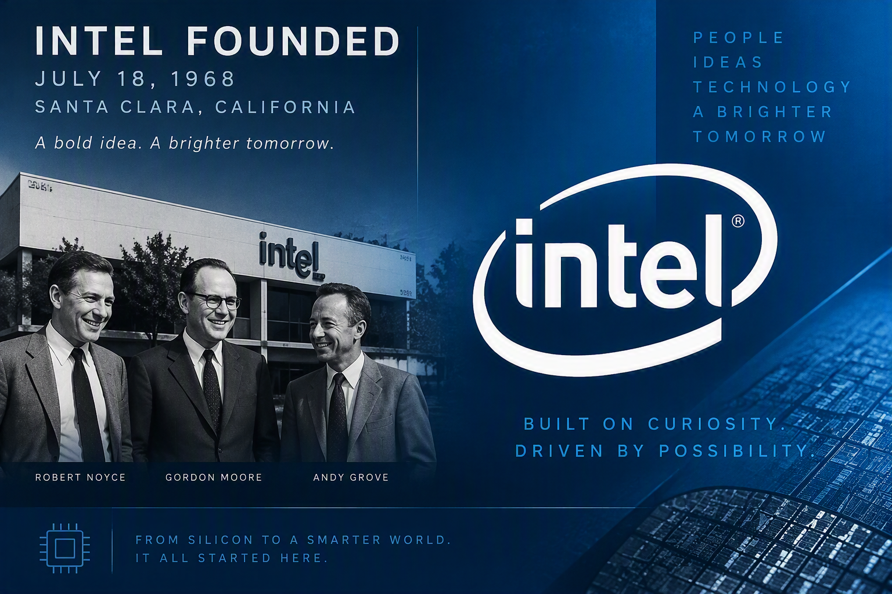
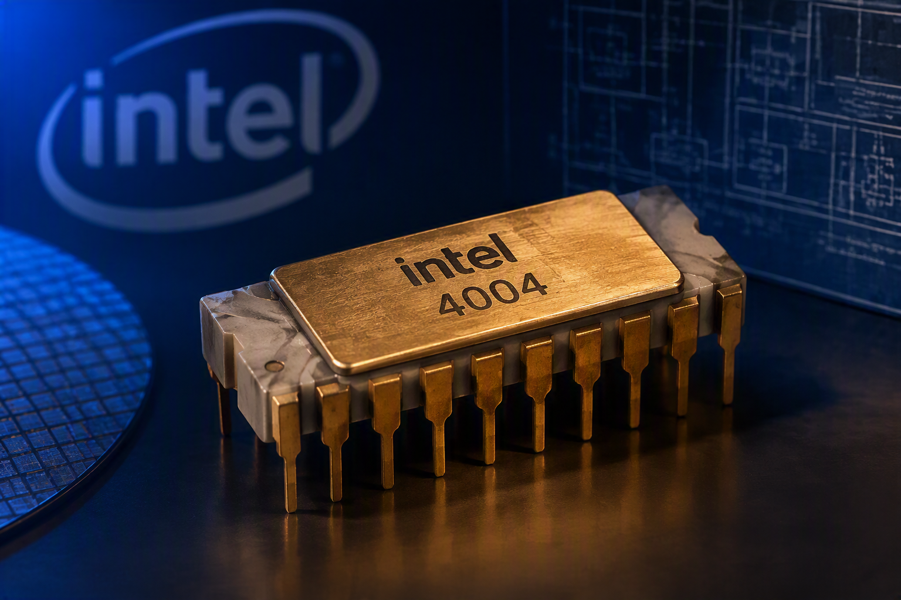
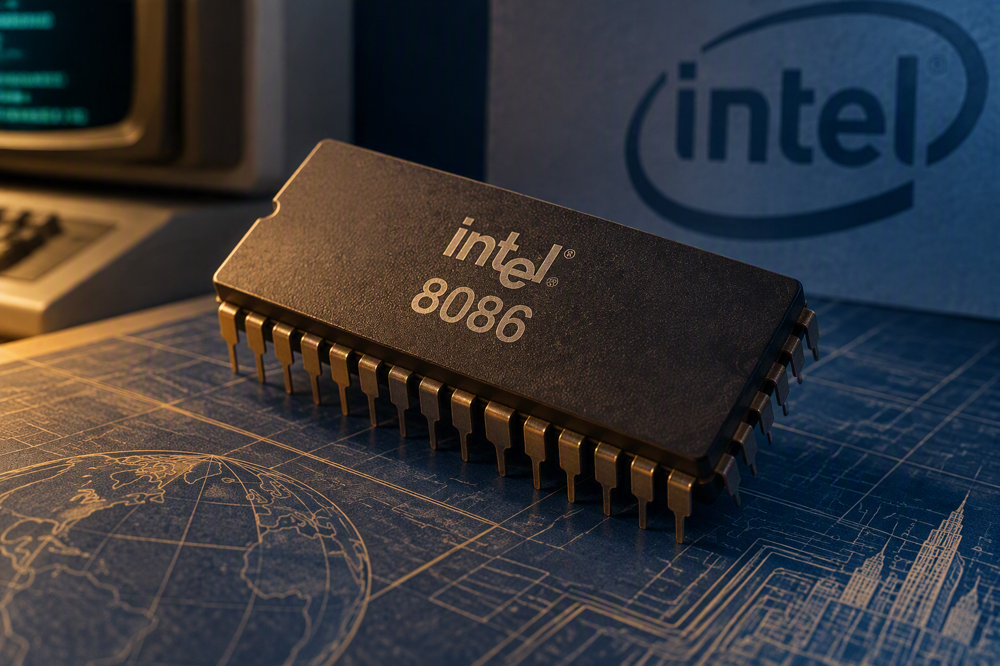
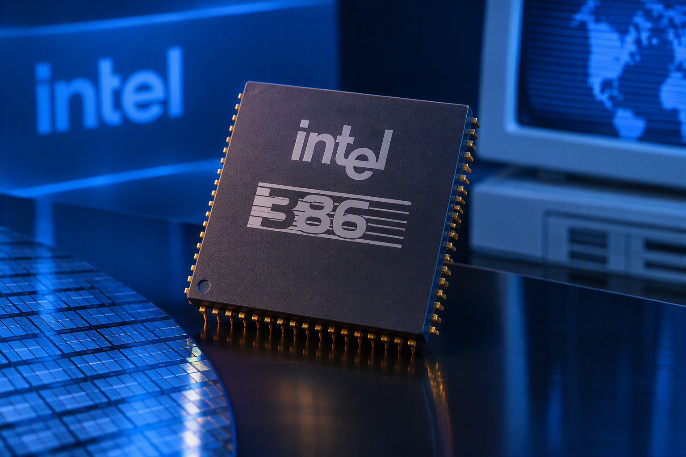
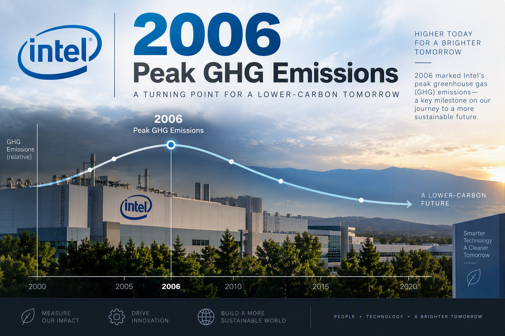
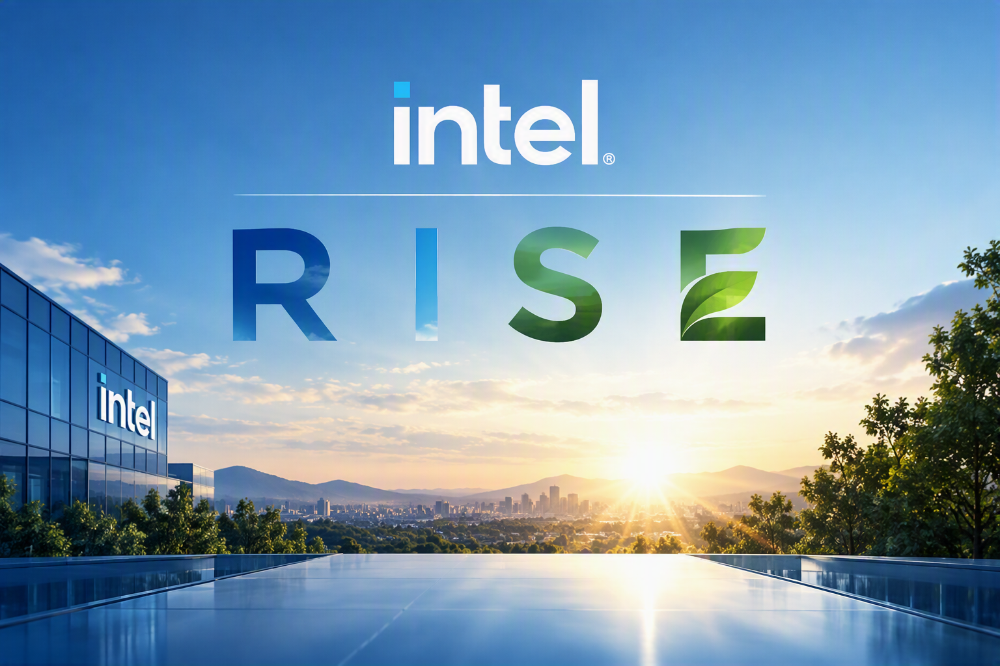
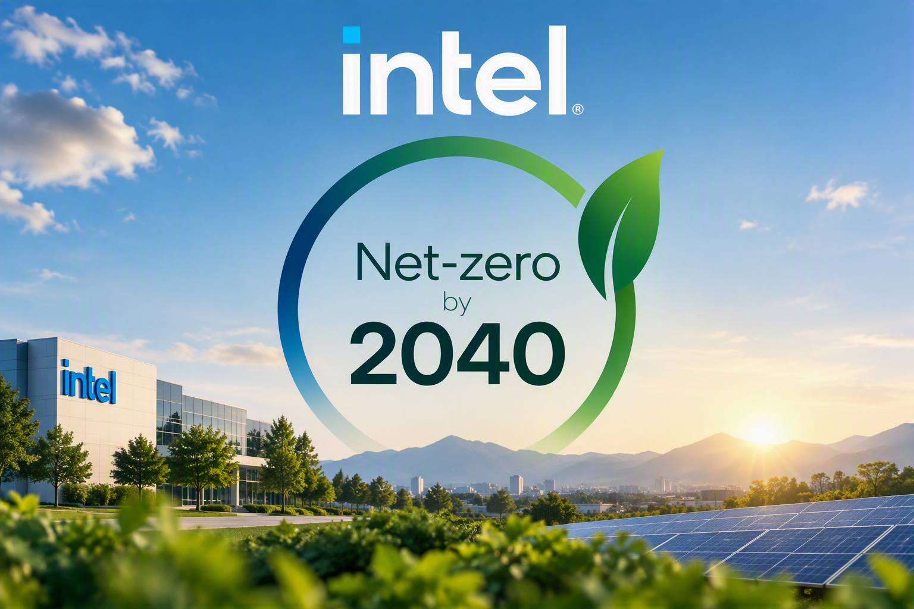
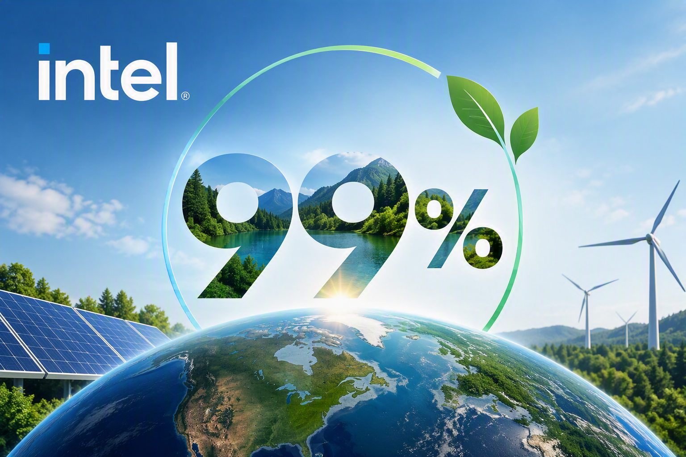
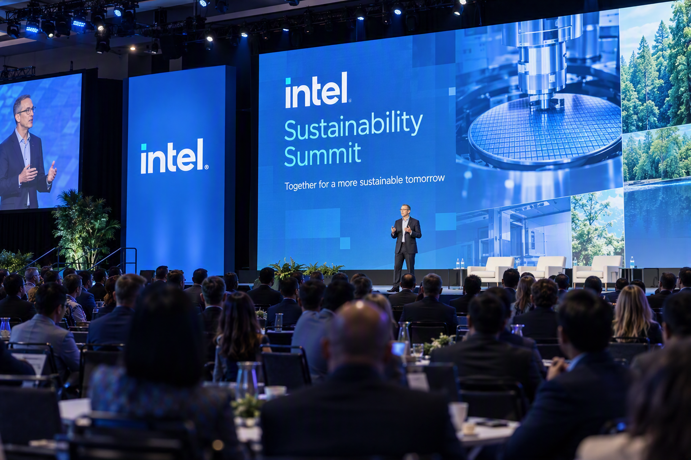

Intel Founded
Robert Noyce and Gordon Moore rename NM Electronics to Intel Corporation, establishing a foundation for decades of innovation.
Explore Intel's journey through time and discover how innovation, responsible manufacturing, and long-term climate action are shaping a more sustainable future for technology and the planet.

Robert Noyce and Gordon Moore rename NM Electronics to Intel Corporation, establishing a foundation for decades of innovation.

Intel introduces the 4004, the world's first commercial microprocessor, setting the stage for the digital revolution.

The 8086 launches the x86 architecture, creating a platform that would power generations of personal computing and enterprise systems.

Intel's 386 processor delivers 32-bit processing and expanded performance, unlocking new capabilities for business and home computing.

Intel records its highest annual greenhouse gas emissions in operations, prompting major investment in cleaner manufacturing and process improvements.

Intel launches its RISE strategy and 2030 goals to advance climate action, water stewardship, and waste reduction across its operations and supply chain.

The company commits to net-zero greenhouse gas emissions across global operations by 2040, reinforcing a long-term environmental mission.

Intel reaches 99% renewable electricity usage worldwide, significantly lowering emissions and supporting an industry-wide shift toward cleaner energy.

Intel hosts its first Sustainability Summit, bringing together suppliers, policy leaders, and industry partners to collaborate on sustainable semiconductor manufacturing.
Scroll to view timeline | Hover over cards to learn more!